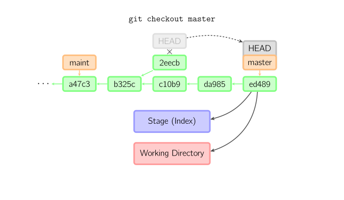
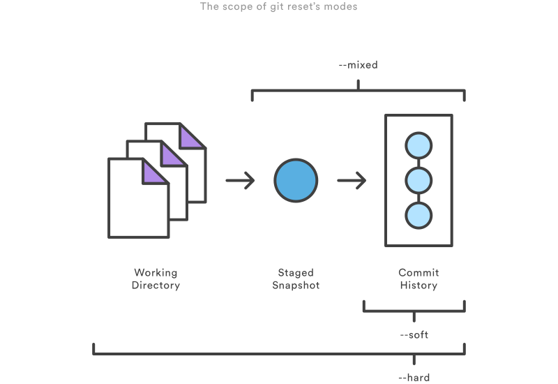
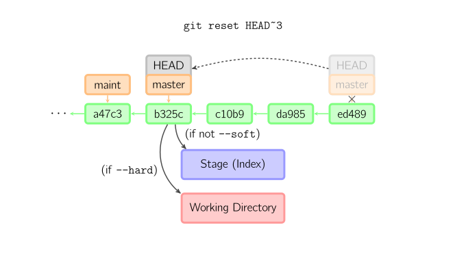

git 操作#
仓库、缓冲区、工作副本#

Git配置#
Git 自带一个 git config 的工具来帮助设置控制 Git 外观和行为的配置变量。 这些变量存储在三个不同的位置：
-
--system修改/etc/gitconfig文件: 所有用户共用 -
--global修改~/.gitconfig或~/.config/git/config文件：只针对当前用户 -
当前仓库的 Git 目录中的
config文件（就是.git/config）：针对该仓库。
优先级:当前仓库config > 当前用户 >所有用户
配置#
#作者 git config --global user.name "John Doe" git config --global user.email johndoe@example.com #文本信息 git config --global core.editor emacs
检查配置信息#
#查看所有 git config --list #查看某项 git config user.name #移除设置 git config --unset user.name
Git init#
初始化仓库，该命令将创建一个名为 .git 的子目录，这个子目录含有你初始化的 Git 仓库中所有的必须文件，这些文件是 Git 仓库的骨干
Git status#
#显示状态 git status #短格式显示 git status -s
状态标识:
- ' ' = unmodified
- M = modified(已修改)
- A = added(已添加)
- D = deleted(已删除)
- R = renamed(已重命名)
- C = copied(已复制)
- U = updated but unmerged(已更新但未合并)
X Y Meaning
-------------------------------------------------
[MD] not updated
M [ MD] updated in index
A [ MD] added to index
D [ M] deleted from index
R [ MD] renamed in index
C [ MD] copied in index
[MARC] index and work tree matches
[ MARC] M work tree changed since index
[ MARC] D deleted in work tree
-------------------------------------------------
D D unmerged, both deleted
A U unmerged, added by us
U D unmerged, deleted by them
U A unmerged, added by them
D U unmerged, deleted by us
A A unmerged, both added
U U unmerged, both modified
-------------------------------------------------
? ? untracked
! ! ignored
Git rm#
用于移除仓库中的文件,如git rm *.txt移除所的的txt文件
Git mv#
git系统中移动一个文件或者目录相当于shell命令
mv oldname newname git add newname git rm oldname
Git show#
显示对象的更多信息
- 对于commit,展示log和差异
- 对于tag,显示tag相关信息
- 对于tree对象,列出树结构名字
- 对于blob对象,显示文件内容
#显示提交信息 git show 716cae27bc24b0f56b0dff5039e6a2cf8ac3edac #显示分支的信息 git show v1.0.0
Git add#
把当前文件放入暂存区域
Git commit#
提交时，git用暂存区域的文件创建一个新的提交，并把此时的节点设为父节点。然后把当前分支指向新的提交节点。下图中，当前分支是master。 在运行命令之前，master指向ed489，提交后，master指向新的节点f0cec并以ed489作为父节点

即便当前分支是某次提交的祖父节点，git会同样操作。下图中，在master分支的祖父节点maint分支进行一次提交，生成了1800b。 这样，maint分支就不再是master分支的祖父节点。此时，合并 (或者 衍合) 是必须的。

如果想更改一次提交，使用 git commit --amend。git会使用与当前提交相同的父节点进行一次新提交，旧的提交会被取消。

HEAD标识处于分离状态时的提交操作#
当HEAD处于分离状态（不依附于任一分支）时，提交操作可以正常进行，但是不会更新任何已命名的分支。(你可以认为这是在更新一个匿名分支。)

一旦此后你切换到别的分支，比如说master，那么这个提交节点（可能）再也不会被引用到，然后就会被丢弃掉了。注意这个命令之后就不会有东西引用2eecb。

但是，如果你想保存这个状态，可以用命令git checkout -b name来创建一个新的分支。

Git checkout#
checkout命令用于从历史提交（或者暂存区域）中拷贝文件到工作目录，也可用于切换分支。
git checkout HEAD a.txt:从提交快照中提取文件到暂存区和工作空间中git checkout a.txt:从暂存区中提取文件到工作空间中git checkout master:切换分支
当给定某个文件名（或者打开-p选项，或者文件名和-p选项同时打开）时，git会从指定的提交中拷贝文件到暂存区域和工作目录。比如，git checkout HEAD~ foo.c会将提交节点HEAD~(即当前提交节点的父节点)中的foo.c复制到工作目录并且加到暂存区域中。（如果命令中没有指定提交节点，则会从暂存区域中拷贝内容。）注意当前分支不会发生变化

当不指定文件名，而是给出一个（本地）分支时，那么HEAD标识会移动到那个分支（也就是说，我们“切换”到那个分支了），然后暂存区域和工作目录中的内容会和HEAD对应的提交节点一致。新提交节点（下图中的a47c3）中的所有文件都会被复制（到暂存区域和工作目录中）；只存在于老的提交节点（ed489）中的文件会被删除；不属于上述两者的文件会被忽略，不受影响。

如果既没有指定文件名，也没有指定分支名，而是一个标签、远程分支、SHA-1值或者是像master~3类似的东西，就得到一个匿名分支，称作detached HEAD（被分离的HEAD标识）。这样可以很方便地在历史版本之间互相切换。比如说你想要编译1.6.6.1版本的git，你可以运行git checkout v1.6.6.1（这是一个标签，而非分支名），编译，安装，然后切换回另一个分支，比如说git checkout master。然而，当提交操作涉及到“分离的HEAD”时，其行为会略有不同，详情见在下面。

拉取远程分支并新建本地分支#
git checkout -t origin/2.0.0
#或者
git checkout origin/remoteName -b localName
Git reset#
reset命令把当前分支指向另一个位置，并且有选择的变动工作目录和索引。也用来在从历史仓库中复制文件到索引，而不动工作目录。

如果不给选项，那么当前分支指向到那个提交。如果用--hard选项，那么工作目录也更新，如果用--soft选项，那么都不变

如果没有给出提交点的版本号，那么默认用HEAD。这样，分支指向不变，但是索引会回滚到最后一次提交，如果用--hard选项，工作目录也同样。

如果给了文件名(或者 -p选项), 那么工作效果和带文件名的checkout差不多，除了索引被更新。

Git reset 总结#
#回退到远程版本 git reset --hard origin/master #从暂存区移除(add之后) git reset HEAD #可以回退到某个提交(commit之后) git reset --hard #合并时遇到冲突想取消操作，恢复index，用git merge --abort #git 1.7以来可以撤消合并 git reset --merge
Git reset 反操作#
git reset HEAD~
git reset 'HEAD@{1}'或者 git reset ORIG_HEAD
Git revert#
以一个新的提交来覆盖之前的修改
#恢复到上一个版本HEAD提交并创建一个新的提交覆盖原有的变更
git revert HEAD~
总结#
- git reset -- files 用来撤销最后一次git add files，你也可以用git reset 撤销所有暂存区域文件。
- git checkout -- files 把文件从暂存区域复制到工作目录，用来丢弃本地修改。

Git clone#
如果你想获得一份已经存在了的 Git 仓库的拷贝，比如说，你想为某个开源项目贡献自己的一份力，这时就要用到 git clone 命令。 如果你对其它的 VCS 系统（比如说Subversion）很熟悉，请留心一下你所使用的命令是"clone"而不是"checkout"
git clone https://github.com/libgit2/libgit2
Git fetch#
#只拉取远程仓库信息不合并
git fetch origin
Git pull#
把远程仓库更改拉取并且合并到本地当前分支,git pull相当于 git fetch和git merge FETCH_HEAD两步操作
#拉取并合并 git pull #拉取远程origin合并到master git pull origin master
Git push#
#将本地master分支提交推送到远程origin
git push orign master
Git remote#
远程仓库管理
#查看远程仓库别名 git remote #查看远程仓库地址 git remote -v #添加远程仓库 git remote add up https://git.coding.net/farwmarth/test_git.git #查看远程仓库详细的分析信息 git remote show origin #把 pb 改成 paul git remote rename pb paul #移除远程仓库链接 git remote rm up
Git tag#
Git 查看日志#
git log#
默认不用任何参数的话，git log 会按提交时间列出所有的更新，最近的更新排在最上面。 正如你所看到的，这个命令会列出每个提交的 SHA-1 校验和、作者的名字和电子邮件地址、提交时间以及提交说明
#查看最后一条提交 git log -1 git log -n 1 #查看内容差异 git log -p #显示所有操作,包括reset git log -g ## 仅在提交信息后显示已修改的文件清单。 git log --name-only ## 显示修改文件及状态 git log --name-status #查看统计信息 git log --stat commit ca82a6dff817ec66f44342007202690a93763949 Author: Scott Chacon <schacon@gee-mail.com> Date: Mon Mar 17 21:52:11 2008 -0700 changed the version number Rakefile | 2 +- 1 file changed, 1 insertion(+), 1 deletion(-) #格工化log为一行显示 git log --pretty=oneline #格工化log 提交对象的简短哈希字串-作者名字,提交时间:提交说明 git log --pretty=format:"%h-%an,%ar:%s" 716cae2-wujiyu,4 weeks ago:branch 8 7c64b0b-wujiyu,4 weeks ago:stash work 1 #显示ASCII 图形表示的分支合并历史 git log --pretty=format:"%h %s" --graph
筛选日志#
#时间点以来的提交 git log --since="2016-10-16" #作者相关提交 git log --author=wujiyu
git reflog#
当你 (在一个仓库下) 工作时，Git 会在你每次修改了 HEAD 时悄悄地将改动记录下来。当你提交或修改分支时，reflog 就会更新.
git reflog有时候可以帮助你找到丢失掉的commit，比如你在某个detached HEAD（即不在任何分支只是在某个历史的commit的节点上）的时候进行了一次commit，然后你切换到另一个分支想把刚才的东西合并进来，这个时候突然意识到刚才的那次提交找不到了，这时你就可以通过HEAD@{1}引用到刚才的提交了，或者通过git reflog找到对应commit的sha1值，然后进行merge
#查看以往提交历史（包括 撤销回退 记录）
git reflog
gitk#
图形化界面显示log
Git fsck#
此命令会检查仓库的数据完整性,所有未引用到的悬空对象都会显示出来
git fsck dangling blob d670460b4b4aece5915caf5c68d12f560a9fe3e4 dangling commit ab1afef80fac8e34258ff41fc1b867c702daa24b
Git查看提交变动#
git diff:比较工作区和暂存区的变化git diff --cached与git diff --staged相同 :比较暂存区与提交快照的变化git diff HEAD:比较工作区与提交快照的变化

#比较本地master分支和远程master分支的差异 git diff master origin/master #比较远程分支与本地文件差异 git diff origin/master a.txt
Git Stash#
保存工作状态
#保存当前修改的工作空间 git stash #弹出一个保存的工作空间 git stash pop #丢弃一个保存的空间 git stash drop stash{1} #清除全部保存 git stash clear
不commit情况下pull#
git stash git pull git stash pop git stash drop stash{1} git stash clear
git stash clear 后恢复#
git fsck --lost-found git show 8dd73fa8d14880182f11e24dc10bca570b6127d7 git merge 8dd73fa8d14880182f11e24dc10bca570b6127d7
Git submodule#
Git submodule update#
git submodule update并不会将submodule切到任何 branch
有些时候你需要对submodule做一些修改，很常见的做法就是切到submodule的目录，然后做修改，然后commit和push。
这里的坑在于，默认git submodule update并不会将submodule切到任何branch，所以，默认下submodule的HEAD是处于游离状态的(‘detached HEAD’ state)。所以在修改前，记得一定要用git checkout master将当前的submodule分支切换到master，然后才能做修改和提交。
git submodule下还有submodule#
git submodule foreach git submodule update
Git clean#
# 删除 untracked files git clean -f # 连 untracked 的目录也一起删掉 git clean -fd # 连 gitignore 的untrack 文件/目录也一起删掉 （慎用，一般这个是用来删掉编译出来的 .o之类的文件用的） git clean -xfd # 在用上述 git clean 前，墙裂建议加上 -n 参数来先看看会删掉哪些文件，防止重要文件被误删 git clean -nxfd git clean -nf git clean -nfds
操作序列附加指令#
--continue#
Continue the operation in progress using the information in .git/sequencer. Can be used to continue after resolving conflicts in a failed cherry-pick or revert.
--quit#
Forget about the current operation in progress. Can be used to clear the sequencer state after a failed cherry-pick or revert.
--abort#
Cancel the operation and return to the pre-sequence state.